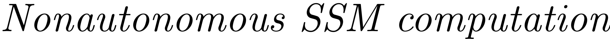

COMPUTE_SIGMA
Contents
function [sigmas] = compute_sigma(n_mat,W ,k,field)
Compute nonautonomous composition coefficients
Compute sigma for every multi-index in n_mat The Sigmas are contributions to the jacobian of the nonlinearity. Details can be found in 
Vectorised computation
K = flip(sortrows(nsumk(field.l,k,'nonnegative')).',2); sigmas = sigma_vectorized(n_mat,K,W,field);
end function [sigma_out] = sigma_vectorized(N,K, W,field) k = sum(K(:,1)); sigma_out = zeros(size(N,2),size(K,2)); N_abs = sum(N); One = speye(field.N); [NOne_base,idx_N_base,idx_One_Base] = multi_subtraction(N,One,'Physical'); for m = 0:k-1 % starting at 0, order k leads to zero pi M = W(m+1).ind; if ~isempty(M) cond = (k-(sum(M(:,1)))) >= N_abs -1;%otherwise pi is zero anyways if nnz(cond)>0 [KM,idx_K,idx_M] = multi_subtraction(K,M,'Parametrised'); %find which multi indices in NOne correspond to multi indices %in N that fulfill cond idx_base = ismember(idx_N_base,find(cond)); [NOne,idx_N,idx_One] = deal(NOne_base(:,idx_base),idx_N_base(idx_base),idx_One_Base(idx_base)); pis = compute_pi(NOne,KM,field); % Sort columns in ascending order of index in K [idx_K,sort_idx_K] = sort(idx_K); idx_M = idx_M(sort_idx_K); pis = pis(:,sort_idx_K); % Sort rows in ascending order of index in N [idx_N,sort_idx_N] = sort(idx_N); idx_One = idx_One(sort_idx_N); pis = pis(sort_idx_N,:); % Read out corresponding SSM coefficients and multiply by pi % (redundancy could be resolved by sorting by idx_M and only reading out each once ) [X_w,Y_w] = meshgrid(idx_One,idx_M); X_w = reshape(X_w,[],1); Y_w = reshape(Y_w,[],1); lin_idx_W = sub2ind(size(W(m+1).coeffs),X_w,Y_w); W_coeffs = W(m+1).coeffs(lin_idx_W); W_pi = full(reshape(W_coeffs,numel(idx_K),numel(idx_N)).'.* pis); % Sum all the contributions that correspond to the same columns % in K [xx, yy] = ndgrid(idx_K.',1:size(W_pi, 1)); accum_Wpi = accumarray([yy(:) xx(:) ], reshape(W_pi.', 1, [])); % Getting all (n_j)s % (could be more efficient if redundancy in n_js is removed) lin_idx_N = sub2ind(size(N),idx_One,idx_N); accum_Wpi = accum_Wpi .*reshape(N(lin_idx_N),[],1); %nposition of each element in accum_Wpi wrt N(:,cond) for %summing them [~,ia,ic] = unique(idx_N,'stable'); pos_idx_N = 1:numel(ia); pos_idx_N = pos_idx_N(ic); if size(pos_idx_N,2)>1 pos_idx_N = pos_idx_N.'; end % Summing terms for same column in N [xx, yy] = ndgrid(pos_idx_N,1:size(accum_Wpi, 2)); sigma_m = accumarray([xx(:) yy(:)], accum_Wpi(:)); %Create linear indices [X,Y] = meshgrid(unique(idx_N),unique(idx_K)); X = reshape(X,[],1); Y = reshape(Y,[],1); lin_idx = sub2ind(size(sigma_out),X,Y); % Read out results sigma_out(lin_idx) = sigma_out(lin_idx) + reshape(sigma_m.',size(sigma_out(lin_idx))); end end end end